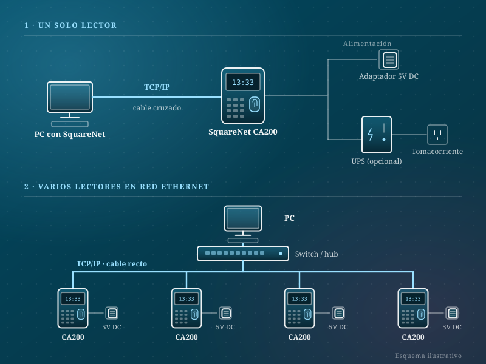

Una de las marcas más reconocidas en el mercado de dispositivos biométricos es ZK Teco, anteriormente conocida como ZK Software. Desde 1998 se ha dedicado a desarrollar soluciones de sistemas de control de asistencia, accesos y producción, tanto en terminales de marcación como en software de gestión de tiempos y fabricación. Cuentan con una gran cantidad de modelos para Control de Acceso y Asistencia que trabajan con huella digital, reconocimiento facial, tarjetas RFID, biometría de las venas, etc., o incluso multibiométricos que combinan varias tecnologías al mismo tiempo brindando la máxima flexibilidad.
SquareNet no distribuye hardware o equipos, pero cuenta con completa compatibilidad para todos los modelos ZK Teco e incluso puede descargar automáticamente los datos de todas tus sucursales.
Para más información o para encontrar estos productos, puede seguir uno de los siguientes enlaces:
Información General

- Los usuarios no deben teclear ningún código para marcar, simplemente colocan su huella digital.
- Los relojes identifican en menos de un segundo.
- Muestra el nombre de la persona al marcar (los datos se suben automáticamente al equipo).
- Notifica al usuario con voz en español sobre los eventos (acceso correcto, intente de nuevo por favor, etc.).
- Menú e interfaz en español muy fácil de utilizar; los nuevos modelos cuentan con pantalla táctil a color.
- Cuentan con puerto USB para insertar una memoria flash y descargar marcaciones o copiar usuarios a otros equipos.
- Cuenta con protección por contraseña o huella digital para los usuarios administradores o supervisores, quienes son los únicos que podrán entrar al menú del equipo para enrolar, configurar, etc.
- Pueden enrolar de manera opcional a usuarios con contraseña, para que marquen su asistencia digitando su código y contraseña. Otros modelos pueden enrolar con el rostro, huella o tarjeta. Toda la configuración se realiza en el equipo mediante el menú: dirección IP, máscara, gateway, etc.
- Recolección automática de las marcaciones del personal.